01
Understand the problem
We look at the evidence, the people involved, the constraints and the wider context to understand what is actually happening.
We look at the evidence, the people involved, the constraints and the wider context to understand what is actually happening.
We identify what needs to change, set the priorities and work out a practical direction.
That may be a strategy, a plan, a campaign, a research product, a digital tool or a working system.
We deliver what the work requires: a clear plan, a working tool, implementation support or continued involvement as the work develops.
A selection of projects, platforms and initiatives we’ve helped shape.
A selection of organisations and networks we have worked alongside.
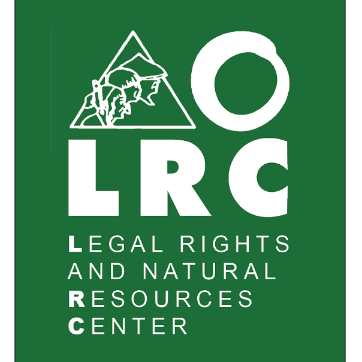
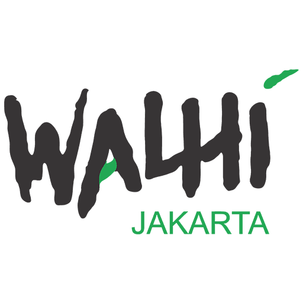
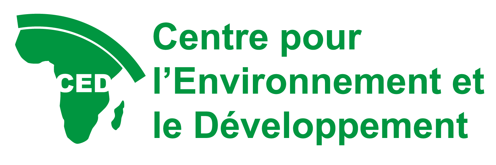
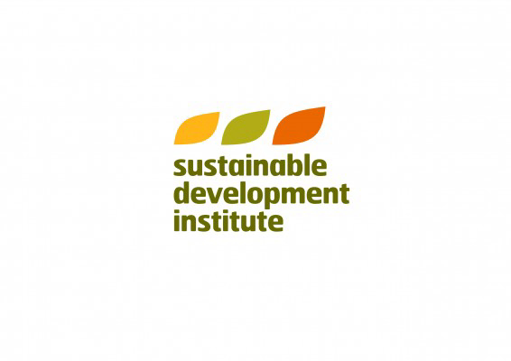
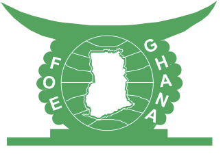
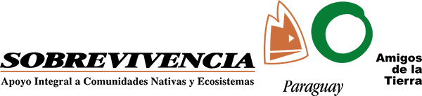
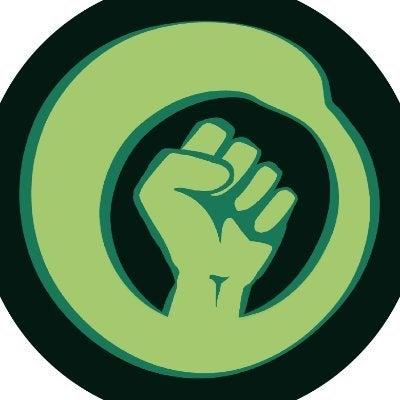
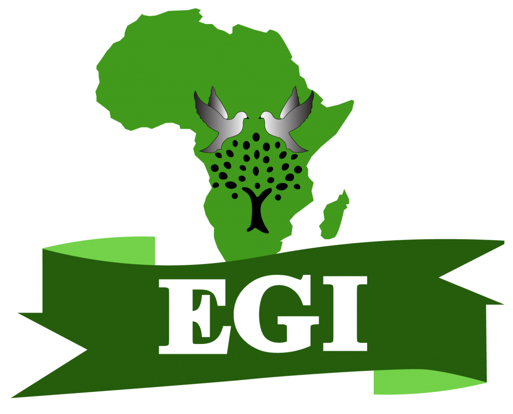
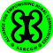
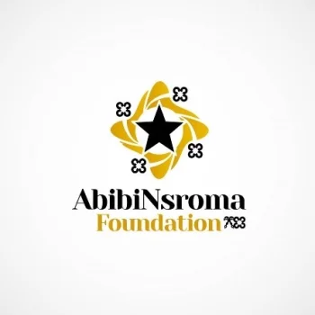
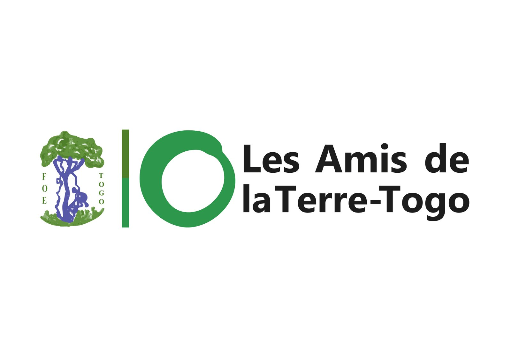
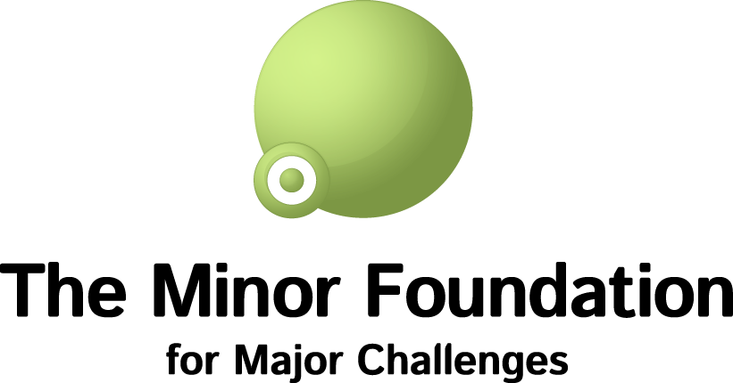
Grantise brings funding discovery, fit assessment and pipeline management into one system. It is being developed around a practical question: how can organisations find the right opportunities earlier and manage them consistently over time?
Explore Grantise →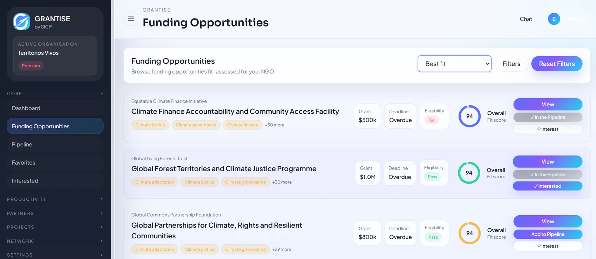
COP31Radar follows the negotiations, actors and practical developments around COP31 and turns them into useful information for organisations preparing for Antalya. It combines regular research, analysis and on-the-ground context.
Explore COP31Radar →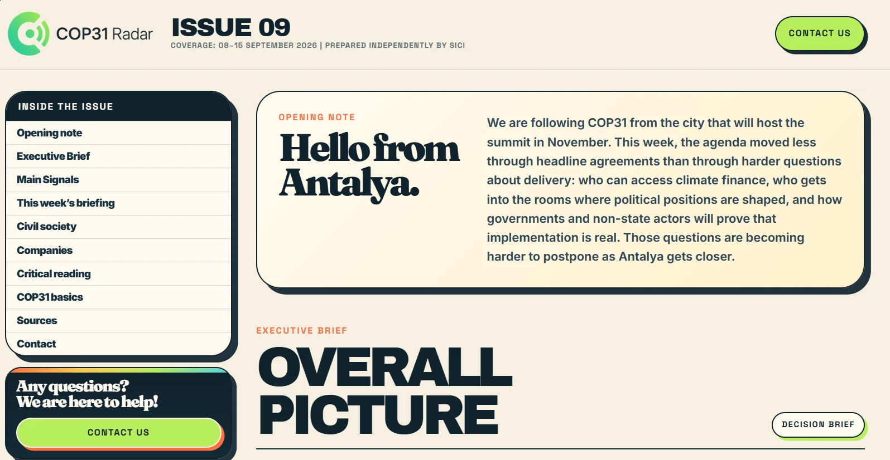
SICI reviewed publicly available evidence of AI use across BIST 100 companies, looking at whether companies identify specific use cases, describe active operational use, quantify their use and connect it to measurable business results.
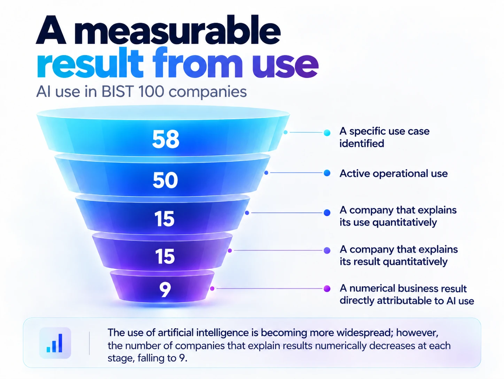
Eventise brings the practical stages of an event into one workflow, including registration, participant communication, attendance and certificates. It was designed around the operational work that usually sits behind the event itself.
Explore Eventise →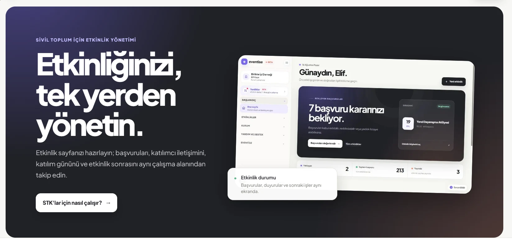
SICI works on complex social and institutional problems through strategy, systems, knowledge and technology.
We look at the evidence, the people involved, the constraints and the wider context to understand what is actually happening.
We identify what needs to change, set the priorities and work out a practical direction.
That may be a strategy, a plan, a campaign, a research product, a digital tool or a working system.
We deliver what the work requires: a clear plan, a working tool, implementation support or continued involvement as the work develops.
A selection of projects, platforms and initiatives we’ve helped shape.
A selection of organisations and networks we have worked alongside.
Grantise brings funding discovery, fit assessment and pipeline management into one system. It is being developed around a practical question: how can organisations find the right opportunities earlier and manage them consistently over time?
Explore Grantise →COP31Radar follows the negotiations, actors and practical developments around COP31 and turns them into useful information for organisations preparing for Antalya. It combines regular research, analysis and on-the-ground context.
Explore COP31Radar →SICI reviewed publicly available evidence of AI use across BIST 100 companies, looking at whether companies identify specific use cases, describe active operational use, quantify their use and connect it to measurable business results.
Eventise brings the practical stages of an event into one workflow, including registration, participant communication, attendance and certificates. It was designed around the operational work that usually sits behind the event itself.
Explore Eventise →SICI works on complex social and institutional problems. Our work spans organisational strategy and change, funding systems, campaigns and public engagement, digital systems and AI, and research and intelligence.
We bring these capabilities together around the needs of each project.
Tell us what you’re working on, where it gets difficult and what you need to move forward.